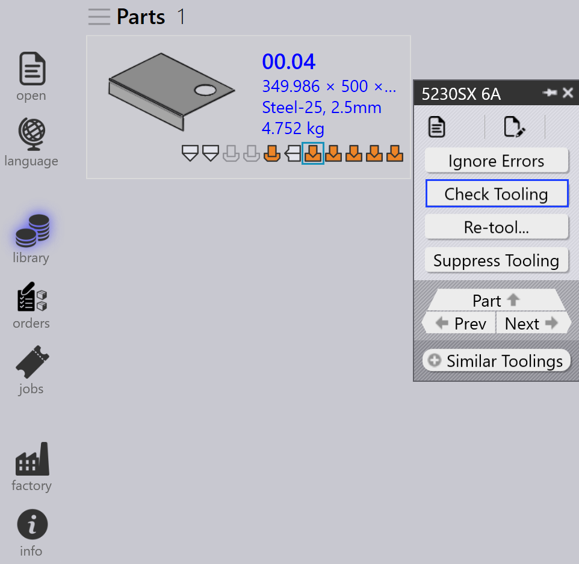
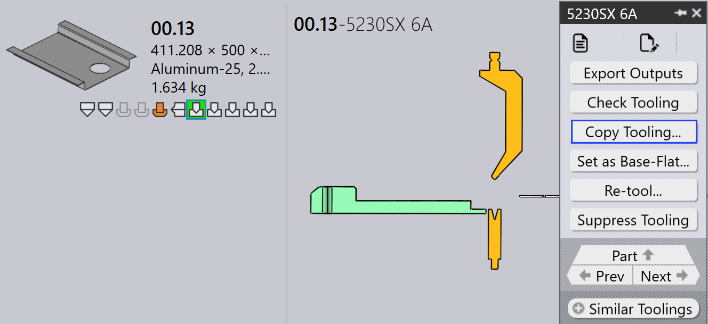
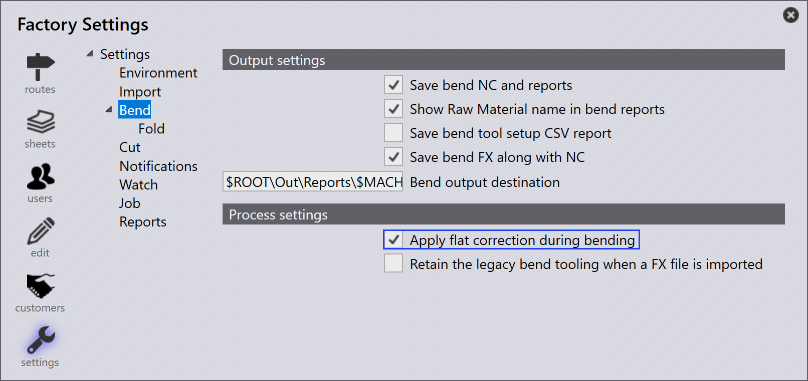
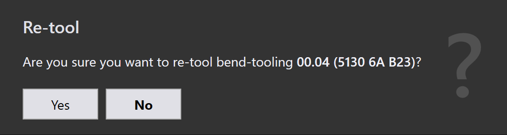
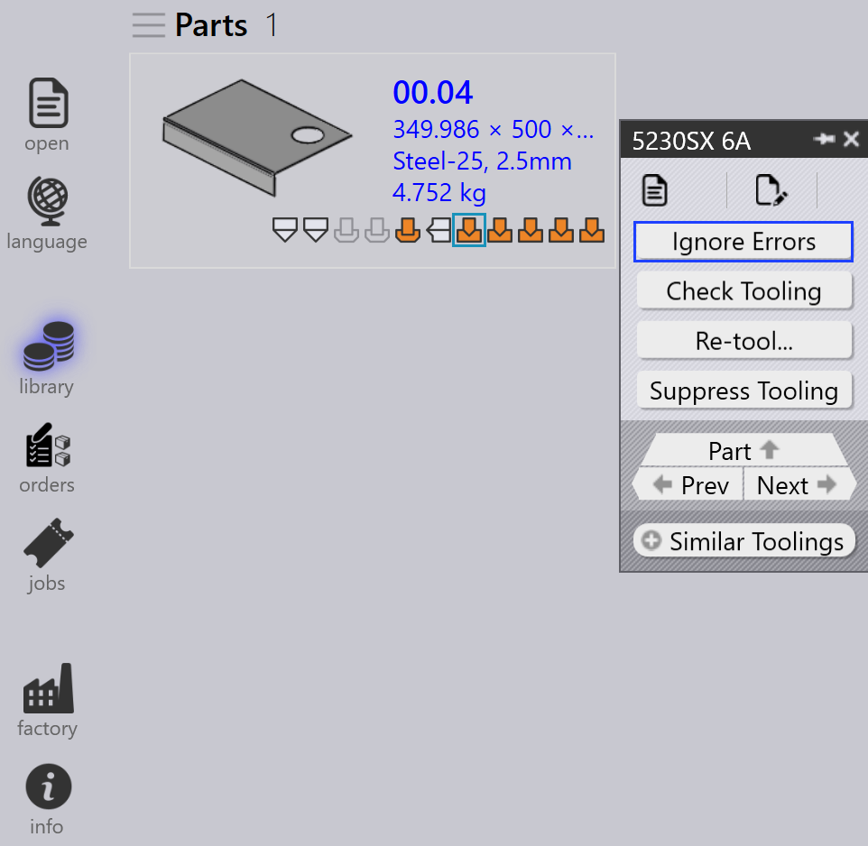
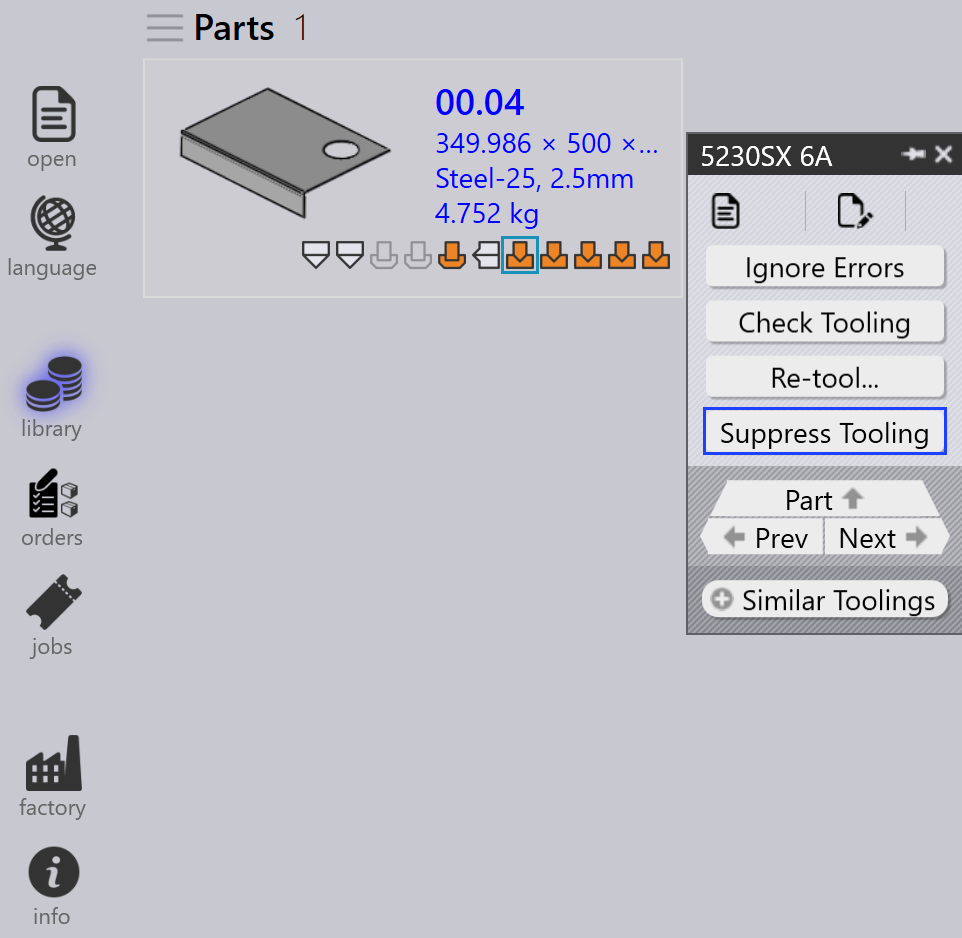

Painel de ferramentas
Esta seção explica ações relacionadas à ferramentaria como Exportar saídas, Check Tooling, Ocultar ferramental, Definir como planificação-base…, Copiar ferramental…, e outras opções usadas para gerenciar instâncias de ferramentaria.

|
|


Exportar saídas
Esta opção exporta a saída da peça para o destino configurado em Ajustes de fábrica. (Veja Configurações de Dobra e Configurações de Corte)

Apenas as ferramentarias associadas à operação de ferramentaria selecionada são exportadas, não a peça inteira.
| Os arquivos exportados dependem do tipo de operação. Para operações de Dobra e Fold, arquivos NC e relatórios são gerados. Para operações de Corte e Punção, apenas os arquivos de peça são exportados. |
Check Tooling
-
Se houver uma mudança nas Configurações CAM ou uma ferramenta de dobra for perdida, você não precisa refazer a ferramentaria da peça.
-
Em vez disso, use Check Tooling para validar a ferramentaria existente sem fazer alterações.
-
Se a validação falhar, o status de ferramentaria dessa instância é atualizado e os arquivos de saída relacionados são removidos.
-
Check Tooling também detecta peças onde erros foram anteriormente substituídos manualmente usando Ignorar erros, e atualiza seu status para erro se necessário.

Copiar ferramental…
A cópia de ferramentaria permite aplicar rapidamente a ferramentaria de dobra de uma solução para outras, economizando tempo e esforço.
Isso copia a configuração de punção, sequência e encosto traseiro de uma ferramentaria de referência selecionada (solução) e tenta aplicar as mesmas configurações a todas as outras soluções.
-
Se a configuração copiada for viável para uma máquina alvo, ela é salva e usada.
-
Se a configuração não for viável, a ferramentaria original para aquela máquina permanece inalterada.
Por exemplo, você pode ter ferramentarias diferentes para diferentes máquinas:
-
Aqui, a Machine 5230SX 6A usa uma punção Gooseneck, a Machine 5085X 6A B23 usa uma punção Pointed.

Quando você usa Copiar ferramental… na Machine 5230SX 6A, ela tenta copiar a configuração Gooseneck para todas as outras máquinas.

As mesmas configurações de punção, sequência e encosto traseiro são aplicadas onde for possível. Se a configuração copiada não puder ser usada, a ferramentaria original permanece inalterada.

Após aplicar a cópia de ferramentaria, a configuração Gooseneck foi aplicada com sucesso a todas as outras máquinas onde é viável.
Definir como planificação-base…
O recurso Definir como planificação-base… define qual ferramentaria de dobra ou fold é usada como o tamanho de referência plano para gerar soluções de corte. Quando uma ferramentaria é marcada como Base-Flat, o TruSmartCAM atualiza o tamanho plano da peça com base naquela máquina e regenera as soluções de corte de acordo. Ferramentarias Base-Flat são mostradas com uma borda azul na interface.
Diferentes máquinas de dobra podem produzir variações leves no tamanho plano para a mesma peça. Quando você define uma ferramentaria como Base-Flat, o TruSmartCAM usa o tamanho plano daquela máquina como referência mestre e recalcula automaticamente as soluções de corte.
Aqui, podemos ver diferentes tamanhos planos para a mesma peça em várias máquinas:

Neste exemplo, a ferramentaria 5130X 6A B23 é definida como Base-Flat, e o tamanho plano atualizado é aplicado nas propriedades da peça:

Seleção automática de base flat
Quando a configuração de fábrica Aplicar correção de planificação durante o processo de dobra está habilitada:

-
O TruSmartCAM define automaticamente a ferramentaria de dobra (que contém a tabela de comprimento máximo de dobra) como Base-Flat durante a importação da peça.
-
Se a ferramentaria de dobra selecionada encontrar um erro ou não for viável, o TruSmartCAM muda inteligentemente e define outra ferramentaria de dobra válida como Base-Flat. Isso garante que a referência de tamanho plano e as soluções de corte sempre permaneçam consistentes e válidas sem intervenção manual.
Gerenciamento aprimorado de base flat
O TruSmartCAM fornece opções de Base-Flat no diálogo Salvar no Praxis ao salvar edições de ferramentaria de dobra ou fold. Essas opções aparecem apenas para ferramentarias no estado OK e garantem que o tamanho plano e as soluções de corte permaneçam precisos.
Definir como planificação-base e calcular solução de corte
Esta opção é usada para marcar uma ferramentaria como Base-Flat pela primeira vez e gerar automaticamente a solução de corte correspondente.
Aparece quando:
-
A ferramentaria não está atualmente marcada como Base-Flat.
-
O usuário fez check-out da ferramentaria para edição e está salvando as alterações.

Para usar esta opção, faça check-out da ferramentaria de dobra ou fold e faça as modificações necessárias, como alterações nos parâmetros de dobra ou tamanho plano. Pressione Ctrl+S para salvar as alterações. No diálogo Salvar no Praxis, escolha Definir como planificação-base e calcular solução de corte e clique em OK. O TruSmartCAM definirá a ferramentaria como Base-Flat e gerará a solução de corte usando o tamanho plano atualizado.
Atualizar a planificação-base e recalcular e solução de corte
Esta opção é usada quando a ferramentaria já está marcada como Base-Flat e foi editada, necessitando que o tamanho plano e as soluções de corte sejam regenerados.
Aparece quando:
-
A ferramentaria já está marcada como Base-Flat.
-
O usuário fez check-out, editou e está salvando as alterações.

Ao editar a ferramentaria Base-Flat existente, atualize os parâmetros de dobra ou geometria de tamanho plano conforme necessário. No diálogo Salvar no Praxis, escolha Atualizar a planificação-base e recalcular e solução de corte. O TruSmartCAM então atualizará a ferramentaria Base-Flat e regenerará todas as soluções de corte relacionadas para refletir as últimas alterações.
|
Apenas uma ferramentaria de dobra pode ser definida como Base-Flat por vez. Quando o Base-Flat é alterado, as soluções de corte existentes são automaticamente reprocessadas. Este recurso está disponível para ferramentarias de dobra e fold dentro do TruSmartCAM. |
Reavaliar ferramental…
Esta opção reprocessa a ferramentaria selecionada para a peça.
Clique com o botão direito na ferramentaria desejada no painel de Ferramentas e clique em Reavaliar ferramental…

Um diálogo de confirmação é exibido antes de prosseguir.

Clique em Sim para continuar com a re-ferramentaria, ou Não para cancelar a operação.
Apenas a ferramentaria selecionada é refeita. Outras ferramentarias associadas à peça não são afetadas. As saídas existentes relacionadas à ferramentaria selecionada são removidas e regeneradas durante o processo de re-ferramentaria.
Use esta opção quando os dados de ferramentaria estiverem desatualizados, incorretos, ou quando alterações forem feitas nas configurações de máquina ou ferramentaria.
Ignorar erros
-
Se uma instância com ferramentas mostrar um aviso, e você ainda quiser prosseguir com ela, você pode substituir o aviso clicando em Ignorar erros.

-
Isso permitirá que o sistema exporte arquivos de saída para aquela instância, mesmo se houver problemas de ferramentaria.
| Use Ignore Errors apenas quando tiver certeza de que o aviso pode ser ignorado com segurança. Substituir erros reais pode levar a danos na máquina ou riscos de segurança. |
Suprimir/Restaurar ferramentaria
-
Quando uma máquina está inativa ou você não deseja que uma peça específica seja processada por uma máquina particular, use Ocultar ferramental para excluir essa peça do nesting naquela máquina.

-
Após suprimir, passar o mouse sobre a instância com ferramentas mostra uma mensagem como: "Tooling suppressed by <User name> on <Date Time>".
-
Suprimir ferramentaria remove o arquivo de saída para aquela máquina e peça.
-
Use Cancelar ocultar ferramental para restaurar o status de ferramentaria da peça naquela máquina.

-
Quando restaurada, o respectivo arquivo de saída é gerado novamente.